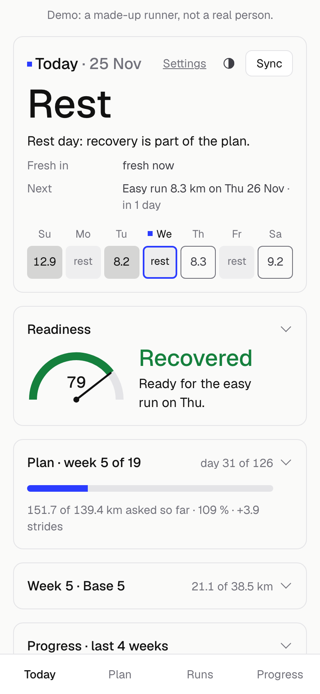
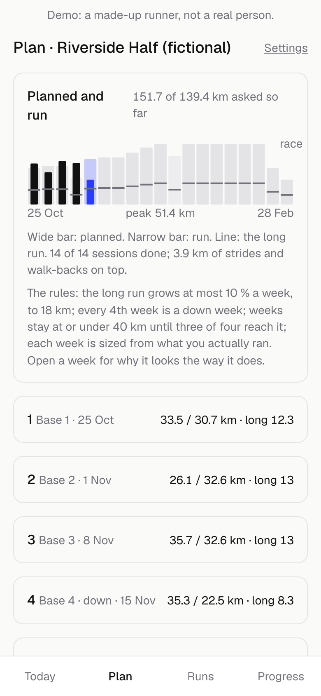
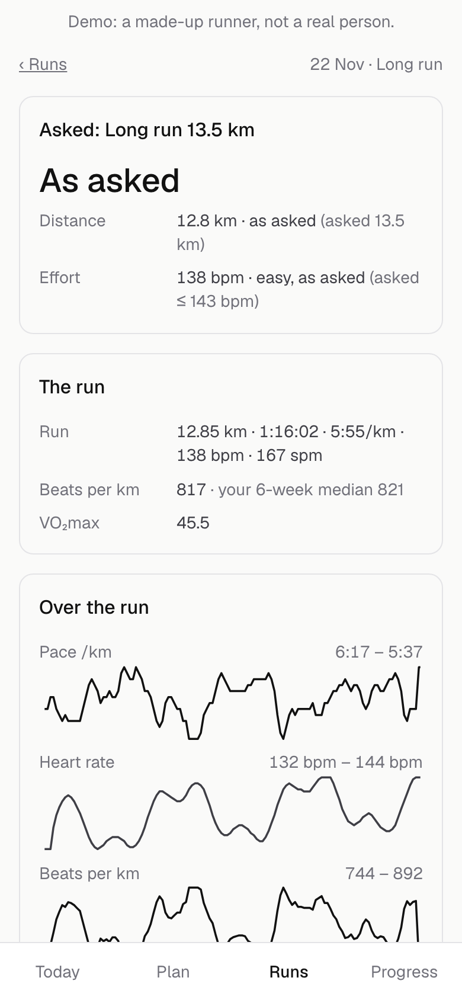

Run Planner
One runner, one race. A half-marathon plan from rules you can read and test, synced from Runalyze. Phone first, free to run.



Screenshots from the demo: a made-up runner, not a real person.
The problem
My earlier version did too much: chat, generated plans, recovery, gait analysis, strength work. And a generated plan can't show why a week has the size it has. What I needed each day was smaller: the session, whether I'm ready for it, and whether the race goal still holds.
Decisions
Rules instead of AI
The plan is plain code. Each week shows every limit it was checked against and which one set its size.
The plan follows what was run
Weeks already run are read from Runalyze, so a missed or short week lowers the next ones.
Narrow on purpose
One race, one runner, four tabs. No chat, no video analysis, no strength library.
Free to run
Vercel Hobby for the app and one daily sync, Turso for the database.
Every number has a source
Where a value has no published source, it says "my choice", and those are untuned. A few of the rules:
| Rule | Value | Source |
|---|---|---|
| Long-run step | At most +10% over the longest of the last 4 weeks | The "10% rule" heuristic; a graded 10% program did not lower injuries in novices (Buist et al. 2008) |
| Load ratio | Over 1.3 fatigue:fitness, easy runs are trimmed | Gabbett 2016: injury risk lowest at an acute:chronic ratio of 0.8 to 1.3 |
| Fitness and fatigue | Weighted averages of daily TRIMP over 42 and 7 days | Coggan's Performance Manager spans, as Runalyze uses them |
| Taper | 2 weeks at 60% and 45% of the peak week, quality kept | Bosquet et al. 2007: about two weeks, volume cut 41–60%, intensity kept |
| Easy effort | At or under 85% of lactate-threshold heart rate | Friel's running zones |
| Paces | Easy 74%, threshold 85.5%, interval 97.5% of VO₂max | Daniels and Gilbert, Oxygen Power (1979) |
The full table, with every rule and setting, is in the README.
Try it with the demo runner
git clone https://github.com/alajter/run-planner cd run-planner npm install npm run demo # http://localhost:3200
The demo fills a local database with a made-up runner: 16 weeks of runs with heart rate, cadence and elevation, a down week every fourth week, a missed week with a cold, and sleep, HRV and resting heart rate for every night. Same data on every machine. No token, no sign-in, nothing leaves your computer.
The series
Four attempts at the same question for the same runner: what should I run today, and is the plan still right?
- runalyze-scriptable (2022): an iOS home-screen widget with my Runalyze numbers.
- run-radar (Nov 2025 – Jan 2026): run analytics plus sleep, and a morning readiness score.
- run-coach (Mar 2026): a broad AI coach: chat, generated plans, recovery, gait analysis from video.
- run-planner (Nov 2026): narrowed to one runner and one race, with plan rules you can read and test instead of AI.